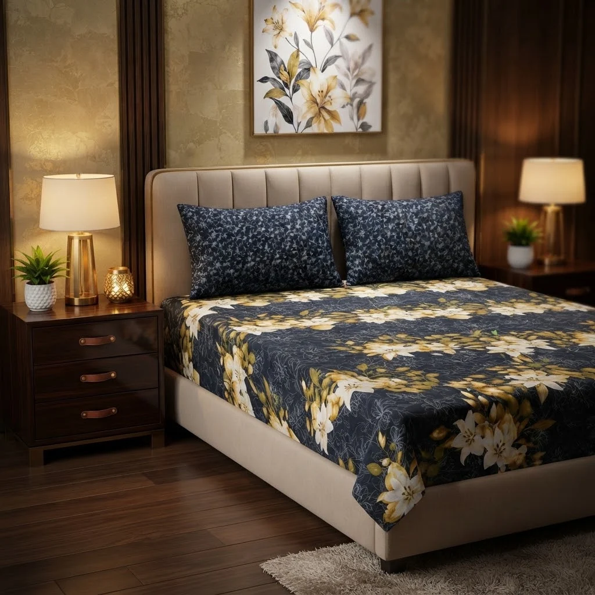

Best Bed Sheets in Peshawar: Practical Shopping Guide

Looking for the best bed sheets in Peshawar? This practical shopping guide helps you navigate the options available on local e-commerce platforms, focusing on quality, comfort, and value for money. The guide highlights key factors to consider when choosing bed sheets, such as fabric type, size, and design, while also addressing delivery and return policies. The supplied listings include gift packs with cotton mix fabric, king size sheets, and pillow covers, which are ideal for gifting or home use. However, some items may not align perfectly with standard bed sheet categories, as they are marketed as sets rather than individual pieces. This guide ensures you make informed decisions based on real product details and practical needs.
Quick buying check: Match the actual item to your task, check its measurements or compatibility, and compare the full delivered price. Read the listing and policies before you order. The examples below are catalog evidence, not hands-on test results.
Key benefits of choosing Bed Sheets carefully
- Better fit for your task: select the specification or design your situation needs.
- Clearer budget: compare the item, delivery and any required extras together.
- Fewer avoidable returns: resolve missing measurements and compatibility questions before ordering.
- More useful ownership: check how the item will be stored, cleaned and used.
Selection criteria and matching the actual task for Bed Sheets
When selecting bed sheets in Peshawar, focus on fabric type and thread count to match your comfort needs. Look for breathable materials like cotton or bamboo for local climate conditions. Ensure the sheets fit your mattress size accurately, checking dimensions carefully. Consider the purpose—daily use versus special occasions—when choosing patterns and durability. Prioritize brands with clear care instructions to avoid issues later. Avoid overpaying for features you won’t use.
Check the delivery options and return policies before purchasing. In Peshawar, cash on delivery is common, so confirm if it’s available and what the delivery charges are. Compare these costs across different sellers to get the best deal. Read customer reviews for insights on quality and service. Be cautious of exaggerated claims in listings and cross-reference with real user experiences. Ensure the sheets are easy to maintain and store, especially if space is limited.
Always match the sheets to your specific needs and lifestyle. For example, if you have children or pets, choose durable and easy-to-clean options. Consider the season and how often you’ll use the sheets. A high thread count may not always be necessary if the fabric is not suitable for your climate. Think about how the sheets will fit into your daily routine and long-term plans.
Fit, dimensions, compatibility or edition checks for Bed Sheets
Check the fit of bed sheets by measuring your mattress dimensions accurately. Ensure the sheet size matches the mattress, including depth if it's a deep pocket style. In Pakistan, mattress sizes can vary, so confirm the exact measurements before purchasing. Verify if the sheets are designed for standard or custom sizes available in local markets. This helps avoid issues with sheets that are too tight or too loose.
Confirm compatibility with your bed frame and any additional bedding you use. Some sheets may not work well with specific types of mattresses or bed frames found in Peshawar. Check if the sheets are suitable for your sleeping habits, such as whether you prefer a fitted sheet or a flat sheet. This ensures the sheets meet your daily needs and provide comfort throughout the night.
Review edition checks by looking at the product description for any specific versions or updates. Some sheets may have different designs or materials based on the edition. Check if the edition is available in local stores or online platforms. This helps ensure you get the right version that matches your preferences and is accessible in Pakistan. Pay attention to any notes about regional availability or product updates.
Quality evidence and limitations of listing claims for Bed Sheets
Quality evidence for listing claims about bed sheets in Peshawar should focus on fabric type, thread count, and durability. Look for certifications or third-party tests that validate these claims. Reliable sources include customer reviews and product testing reports. Avoid relying solely on seller descriptions without supporting data. Check for detailed product specifications and ensure they match the actual item. Verify if the fabric is suitable for local climate conditions, such as breathability for warmer months.
Limitations of listing claims often stem from inconsistent product quality and misleading marketing. Some listings may not accurately represent the actual product. Verify claims by checking multiple sources and comparing details across platforms. Be cautious of exaggerated benefits or unverified specifications. Pay attention to return policies and customer service responsiveness. If a listing lacks detailed information or has numerous negative reviews, consider it a red flag.
Always cross-reference information with trusted retailers or local stores. Seek out detailed product descriptions and clear return policies. Use customer feedback to identify reliable sellers. Avoid making purchases based on incomplete or vague information. Prioritize transparency and accuracy when evaluating bed sheet listings. Check for any additional costs such as shipping or handling fees that may affect the total price. Ensure the product fits your needs in terms of size and design.
Budget tradeoffs and the full delivered cost for Bed Sheets
Budget tradeoffs require careful evaluation of what features are most important. Prioritize comfort, durability, and fit over unnecessary design elements. In Peshawar, consider local availability and delivery options to avoid hidden costs. Compare prices across platforms but focus on long-term value rather than just initial cost. Always check return policies and delivery timelines to ensure flexibility. Look for promotions or seasonal discounts that can reduce overall expenses without compromising on essential qualities.
Full delivered cost includes more than the listed price. Factor in shipping, handling, and any additional fees that may apply. Some sellers may offer free delivery, while others charge based on weight or distance. In Pakistan, delivery charges can vary significantly between regions. Always calculate the total cost before finalizing a purchase to avoid surprises. This helps in making informed decisions that align with your budget.
Practical shopping involves understanding what you truly need versus what is available. Avoid impulse buys by creating a checklist based on your requirements. Look for reviews and user experiences to gauge real-world performance. In Peshawar, local markets and online platforms offer different advantages. Weigh these options carefully to find the best balance between cost, quality, and convenience. This approach ensures you get the most value for your money.
Setup, care, storage and useful ownership for Bed Sheets
Setup for bed sheets involves ensuring the correct size and fit for your mattress. Measure your mattress accurately before purchasing to avoid issues. Check the thread count and fabric type to match your comfort preferences. Always read the care instructions provided by the manufacturer to maintain quality. Consider the climate in Peshawar, where humidity can affect fabric, and choose breathable materials like cotton or linen.
Care for bed sheets requires regular washing using mild detergents. Follow the washing and drying guidelines to prevent damage. Avoid using bleach unless specified. Wash sheets at the recommended temperature to preserve fabric integrity and color. In Peshawar, where water hardness can vary, consider using a water softener or a gentle detergent to protect the fabric. Always check the care label for specific instructions.
Storage of bed sheets should be in a cool, dry place away from direct sunlight. Fold or roll them neatly to prevent wrinkles. Keep them in breathable containers or drawers to avoid moisture buildup. In Peshawar, where seasonal changes can affect humidity, use silica gel packets or desiccants to absorb excess moisture. Store sheets in a clean, dust-free area to prevent damage.
Common mistakes, arrival inspection and returns for Bed Sheets
Common mistakes when buying bed sheets in Peshawar include overlooking fabric quality and thread count. Many buyers focus only on price, leading to poor durability. Always check for breathable, soft materials that suit your climate. Avoid assuming all sheets are the same; different weaves offer varying comfort levels. Be cautious of misleading product descriptions that don’t match the actual feel or performance. Always read reviews from local buyers for real insights.
Arrival inspection is crucial to ensure sheets meet expectations. Check for damage, stains, or incorrect sizes before accepting delivery. Verify that the quantity matches the order and that all pieces are present. If using cash on delivery, inspect thoroughly before paying. Take photos of any issues to support potential returns. Don’t rush the process; a quick check can prevent future problems and ensure satisfaction with the purchase.
Returns can be tricky, so understand the seller’s policy before buying. Some online stores may charge return shipping or have strict time limits. Keep the original packaging and all receipts for smoother returns. If the sheets don’t fit or feel different than expected, contact customer service promptly. Always follow the return procedure outlined by the seller to avoid complications. Being proactive can save time and hassle later.
Future changes and responsible shopping decisions for Bed Sheets
Future changes in the bed sheets market in Pakistan may include more sustainable materials and eco-friendly production methods. As environmental awareness grows, consumers should look for certifications or labels that indicate responsible sourcing and ethical manufacturing. Staying informed about industry trends can help shoppers make choices that align with long-term values and reduce environmental impact. Opting for organic cotton or recycled fibers can support greener practices.
Responsible shopping decisions involve considering the full lifecycle of bed sheets, from production to disposal. Choosing durable, high-quality options can reduce the need for frequent replacements, saving money and resources. Supporting local manufacturers or brands that prioritize fair labor practices and sustainable operations can also contribute to a more ethical marketplace. Consumers should evaluate the environmental and social impact of their choices, such as water usage in production or labor conditions.
Consumers should evaluate delivery options and return policies when shopping online, especially in regions like Peshawar where logistics can vary. Checking for reliable customer reviews and understanding the terms of cash on delivery can prevent unexpected issues. Making informed choices based on personal needs and available information ensures a more satisfying and responsible shopping experience. It is also important to assess the overall cost, including shipping and potential return fees, to avoid hidden expenses.
A useful buying decision connects your actual task to a clearly described item. A category name, attractive photo or low headline price cannot replace checking what will arrive and whether it fits.
Illustrative Pakistan use cases for Bed Sheets
Illustrative: compare a fixed PKR budget
A person with a fixed budget comparing full delivered costs might look at the listed price of Rs 1452 for a 3PC cotton mix bedsheet set and add the delivery fee of Rs 250 to understand the total cost. They would check if the set meets their needs and if the price is reasonable for the quality. They might also compare other listings to ensure they are getting the best value for their money.
Illustrative: check fit for shared home use
Someone checking fit or compatibility for shared home use would consider the king size sheet dimensions of 90/92 to ensure it fits their bed. They might also look at the set’s design and fabric to see if it matches their shared space’s decor. Since the set includes pillow covers, they would confirm if the size and style suit their room’s layout and personal preferences.
Illustrative: plan delivery and arrival inspection
Someone ordering to a smaller town would need to account for longer delivery times, which can take up to 6 working days. They would plan to inspect the product upon arrival to ensure it is undamaged and matches the description. They might also check the return policy in case the item is not as expected, knowing they have 7 days to return it if needed.
Comparison and evidence from actual catalog listings
The following listing snapshot was recorded at 2026-10-26 05:15:21 PKT. These are seller-provided descriptions, not independent performance tests. A category label does not confirm that an item suits every task discussed in this guide. Check the linked item for its current price, availability, measurements and included accessories.
| Listed item | Snapshot price | Listing evidence and limits |
|---|---|---|
| Gift Pack Bedsheet Cotton Mix Full Printed 3PC Set With King Size Sheet And 2 Pillow Covers | Rs 1,452 | Listing description: The Gift Pack Bedsheet AY0010011 Is A 3PC Bedsheet Set Made From Cotton Mix Fabric. The Set Includes 1 King Size Sheet And 2 Pillow Covers, Providing A Complete Bedsheet Set With Matching Pillow Covers.The King Size Sheet Measures 90/92 And Is Designed With A Full Printed Pattern. Along With The Sheet, The Set Includes Confirm any unspecified detail with the store. |
| Gift Pack Cotton King Size 1 BedSheet And 2 Pillow Covers In Premium Box Packing | Rs 1,452 | Listing description: The Gift Pack Cotton Mix King Size Bedsheet AY0010010 Is A Bedsheet Set Made From Cotton Mix Fabric. The Set Includes 1 Sheet And 2 Pillow Covers, Making It A 3PC Set.The Bedsheet Comes In A King Size Of 90/92. Along With The Sheet, The Set Includes 2 Pillow Covers.This Product Comes With Premium Box Confirm any unspecified detail with the store. |
| Gift Pack Cotton Mix King Size Bedsheet - 3pc Set | Rs 1,452 | Listing description: Elevate your bedroom luxury or delight a loved one with the Gift Pack Cotton Mix King Size Bedsheet 3-Piece Set. Crafted from a durable, ultra-soft cotton blend, this king-size ensemble combines breathable comfort with elegant styling, complete in a premium presentation gift box. Confirm any unspecified detail with the store. |
Delivery and returns: Sasta Milaga currently lists Rs 250 delivery, free above Rs 5,000. Usual estimates are 2-4 working days in major cities and 3-6 elsewhere. Returns can be requested within 7 days; damaged or wrong items return free, while other returns cost Rs 250. Check delivery terms and return terms for current conditions.
Frequently asked questions about Bed Sheets in Pakistan
How do I choose Bed Sheets for my needs?
To choose bed sheets, consider fabric type, size, and design. Cotton mix offers comfort and durability. Measure your mattress to ensure the right fit. Think about patterns and color schemes that match your bedroom decor. Prioritize quality over price for long-term use.
What should I check in the listing before ordering?
Check the product description for fabric, size, and included items. Confirm if the listing includes sheets and pillow covers. Look for details on delivery and return policies. Verify if the price includes shipping or if extra fees apply.
How do I compare the full cost in Pakistan?
Compare prices and delivery costs across listings. Add shipping fees to the listed price for total cost. Check return policies and any additional charges. Consider the overall value, not just the initial price. Factor in delivery time and reliability for a complete comparison.
How much is Sasta Milaga delivery and how long does it take?
Sasta Milaga currently lists Rs 250 delivery, with free delivery on orders above Rs 5,000. Usual estimates are 2-4 working days in major cities and 3-6 working days elsewhere. Read the linked delivery page for current conditions and allow for your specific address.
Can I return a damaged, wrong or unsuitable item?
The published return window is 7 days after delivery. Damaged or wrong items return free, while other returns carry a Rs 250 fee. Read the linked return policy, keep the packaging and report the issue promptly.
Are the product examples independently tested recommendations?
No. The examples are a dated snapshot of seller-provided catalog listings. We have not independently tested these items or verified customer outcomes. Prices and availability can change. Open each product page, compare the stated specifications with your needs and ask the store about missing details.
Conclusion
When shopping for the best bed sheets in Peshawar, it's essential to consider the available options, pricing, and delivery policies. The current catalog listings highlight a range of gift sets with cotton mix fabric, king size sheets, and pillow covers, all offered at a listed price of around PKR 1,452. However, these are seller-provided descriptions without verified user reviews or hands-on testing. Practical next steps include checking the delivery fee of PKR 250 and free delivery threshold of PKR 5,000, as well as understanding return policies that allow returns within 7 days. Always verify product details directly on the site before purchasing to ensure the best fit for your needs.
Choose with a clear checklist. Browse Bed Sheets and compare current listing details. Read how to order before placing a cash-on-delivery order. Take time to confirm the item fits your needs.
Tags: best bed sheets in Peshawar, bed sheets online Pakistan, buy bed sheets online, bed sheets price in Pakistan, bed sheets comparison, bed sheets shopping checklist, bed sheets cash on delivery, how to choose bed sheets for everyday use, what to check before buying bed sheets online, compare bed sheets with delivery costs in Pakistan, bed sheets buying guide for Pakistani families, questions to ask before ordering bed sheets with COD
More guides
Air fresheners size fit compatibility Pakistan: Size, Fit and Compatibility Checklist
Compare Air Fresheners in Pakistan: listing details, fit and delivered costs. Read product, delivery and return information before ordering.
Umrah travel checklist: documents, packing and planning
A practical Umrah checklist: passport and visa documents, what to pack for Makkah and Madinah, health preparation and booking tips.
Air conditioners (split) size fit compatibility Pakistan: Size, Fit and Compatibility Checklist
Compare Air Conditioners (Split) in Pakistan: listing details, fit and delivered costs. Read product, delivery and return information before ordering.